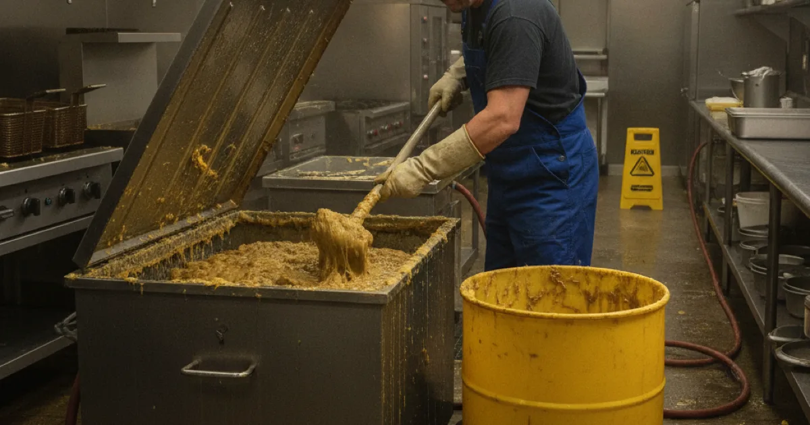
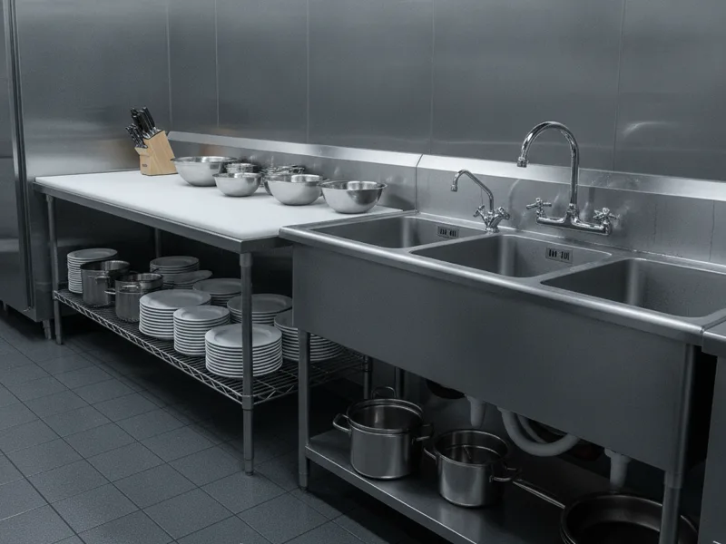

Grease Trap Cleaning in Armonk, NY
A clean grease trap keeps your kitchen's drains flowing and your property in good standing. We service restaurants, delis, and other small commercial kitchens across the Armonk area.
- Licensed & Insured
- Same-Day Service Available
- Upfront Pricing
- Residential & Light Commercial Plumbing

Why grease trap cleaning matters
A grease trap catches fats, oils, and grease before they reach your kitchen's drain lines and the municipal sewer system. When it's working properly, it protects your plumbing and helps you stay in line with the maintenance expectations local health and building authorities have for commercial kitchens.
When a grease trap is neglected, buildup works its way past it and into the drain lines beyond, which is one of the most common reasons a commercial kitchen ends up with a slow or backed-up drain during a busy service.
Signs your grease trap is overdue
Slow-draining sinks or floor drains near the kitchen line are usually the first sign. A persistent foul odor near the trap or in nearby drains is another common one, along with grease or a greasy sheen showing up in a nearby drain or cleanout. If dishwashing or prep sinks are draining more slowly than they used to, it's worth checking the trap before the problem gets worse.
We see this often in town centers like Mount Kisco and Yonkers, where restaurants and delis run a steady volume of food service and depend on the trap being serviced on a regular schedule rather than only after a problem shows up.
Our grease trap cleaning process
We pump out the accumulated grease, oil, and solids from the trap, then clean the interior so it's ready to work at full capacity again. While we're there, we also check the trap's baffles and fittings to confirm everything is sealed and functioning the way it should.
If we find buildup has already made its way into the connected drain line, we can keep the connected drain lines clear as part of the same visit, rather than leaving you to deal with a slow drain later.

What affects the cost
The size of your grease trap and how long it's been since the last service are the two biggest factors — a trap that's gone a long time without cleaning takes more time and effort to fully clear. Ease of access also plays a role, as does whether we're doing a routine service or clearing a trap that's already causing drain problems.
When to call a professional
Call us if it's been a while since your last service, if you've noticed slow drains or odors near the kitchen line, or if you simply want to set up a regular maintenance schedule so it doesn't become a problem. For traps with heavier buildup than a standard pump-out can fully clear, a deeper jetting service can help restore full flow to the lines beyond the trap.
The the EPA's guidance for food service facilities outlines why keeping fats, oils, and grease out of the sewer system matters for both plumbing and the broader wastewater system — it's a big part of why regular grease trap service is worth staying on top of.
Grease trap cleaning is just one piece of what we handle for properties in the area. Take a look at our residential and commercial drainage services for everything else we offer, from routine drain cleaning to full sewer line repair.
Frequently asked questions
How often should a commercial grease trap be cleaned?
It depends on the size of the trap and how much grease your kitchen produces, but most small commercial kitchens benefit from service every one to three months rather than waiting until a problem shows up.
What happens if a grease trap isn't cleaned regularly?
Grease and solids build up until they overflow into your drain lines, which can cause slow drains, backups, and odors, and eventually more expensive plumbing repairs.
Do you serve restaurants and delis outside of Armonk?
Yes. We service small commercial kitchens throughout the area, including Mount Kisco and Yonkers, in addition to Armonk.
Can you set up a regular maintenance schedule for our grease trap?
Yes. We can set up recurring service so your trap gets cleaned on a consistent schedule, rather than leaving it to chance.
Is grease trap cleaning disruptive to a busy kitchen?
We work efficiently and can typically schedule service around your kitchen's slower hours so it doesn't interfere with service.
Do you handle both the grease trap and any resulting drain problems?
Yes. If buildup has already affected the connected drain lines, we can address both in the same visit.